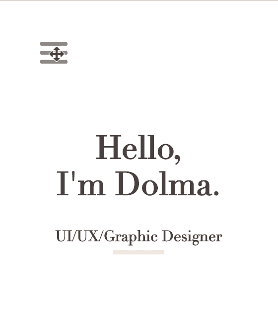
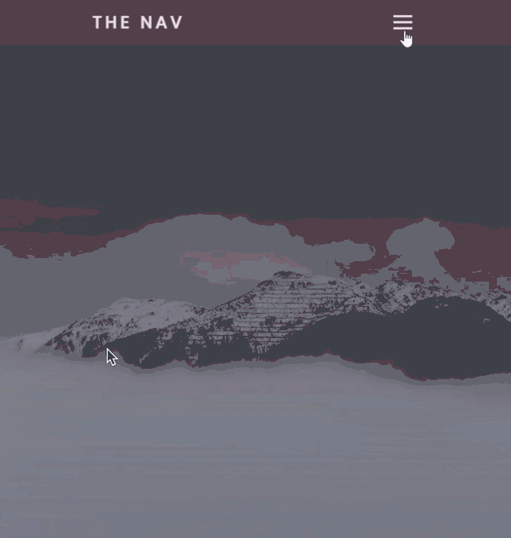
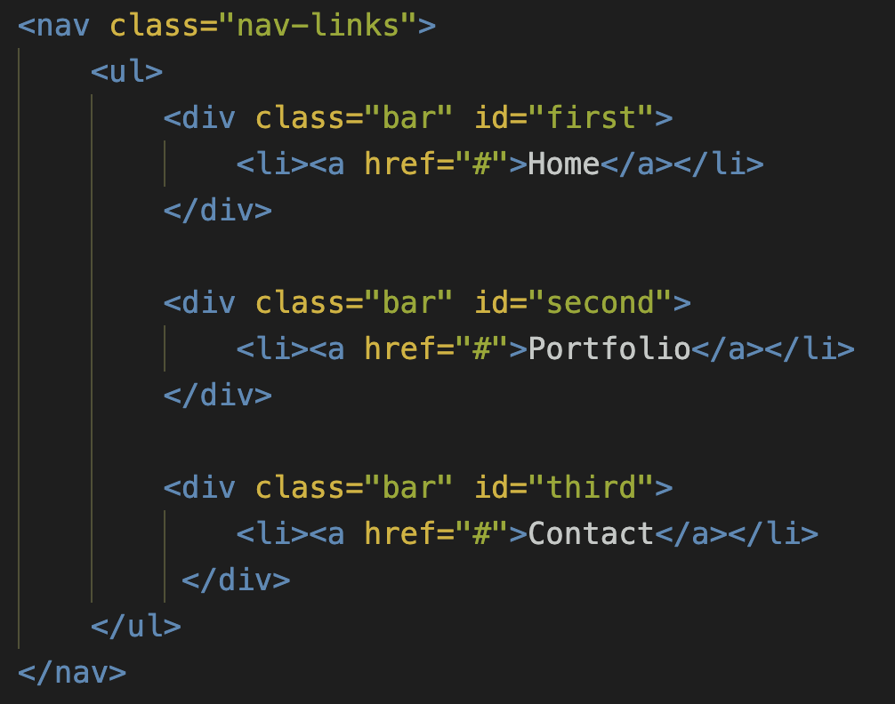
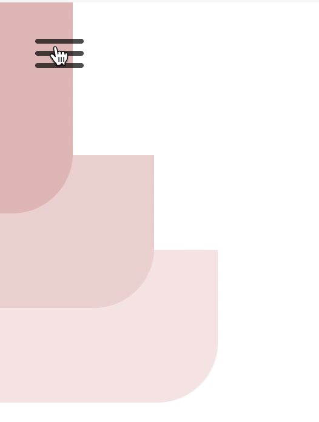
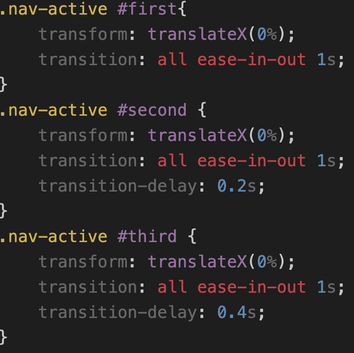

HAMBURGER MENU BAR
Context
The micro interaction I want to improve is based off the hamburger menu bar from my current website: My Portfolio Website
Problem: Currently, when clicking on the hamburger, a menu bar just slides in covering over half of the page. The hamburger button also does not give a direct feedback. To conclude, this interaction is very simple, predictable, and not exciting at all.

Current Hamburger Menu Bar I want to improve.
Proposed Improvement: I decided to add two rules. First is the hamburger icon, as it is a button, naturally people would want a kind of immediate direct feedback upon tapping it. So, I want to have the hamburger icon to have its own animation where it would transition to an “X” upon clicking it.
Second is the menu bar, initially I wanted the bar to slide in like it does originally but only have the text come in one by one. But this changed later on as I began to explore more designs online.
 Hamburger Animation Reference
Hamburger Animation Reference

Slide in Menu Bar Reference
I believe these changes will add a sense of joy and life.
Process
CODE / DEVELOPMENT
I started with coding the hamburger and then the menu bar.
The improved hamburger icon animation was pulled from jonsuh.com which has a set of different hamburger icon animations. The one I chose was called “Spin” that transitions from a hamburger icon to an “X” by spinning. I implemented this animation’s CSS and JavaScript code as directed from the jonsuh.com website.
Now that was done, I began to work on the menu bar sliding in. However, before starting this, I came across an Adobe XD micro interaction animation that inspired me to change my initial proposed idea.
Inspired by this Adobe XD Micro Interaction.
I really loved how the bars come in one by one and they each have different colors too. It’s smooth animation makes it very attractive and elegant, a style I love. I already have the words coming in one by one, but this inspired me to up my design. I have decided, I will make each word have its own colored bar and the bar will come in one by one instead!
To build this animation, I first made sure each word is in its own div and has its own “id”. That way I could stylize them to become a bar by adding “padding” and refer to their “id” to give them a specific “background color”.
All of these together are enclosed within a “ul” tag which allows them to appear as a list. The “ul” tag and each div that is enclosed by a “li” tag is overall surrounded by a “nav” tag with a class = “nav-links”.
The “id” for each bar is set to transform:translateX(-100%) so it is all located out of the screen on the left side. To have the bar slide in with full view, I made a separate class “.nav-active” which is not present in the html page. I used Javascript to make the classList of the nav bar toggle between “.nav-links” and “.nav-active”. The “.nav-active” have “id” of the bars coded with different CSS style. The CSS code for the .nav-active #first #second #third all have their transform property changed to translateX(0%) so that it can slide into the screen. So if we click on the hamburger icon, the 3 bars will appear at once . What I wanted was for them to come in one by one. To achieve this, I set the 2nd bar to have a transition delay of 0.2s and the 3rd with 0.4s.

HTML for the three bars.
CHALLENGE
The challenge for my alpha was sliding the nav bar out of view. What happened was that the whole bar slide out together at once; I wanted them to leave one by one as well. So I just copied the transition delay from the .nav-active bar styling and pasted it into the .nav-links bar styling. However it turned out like this:

SOLUTION
I did not like it and it took me a while to figure out, but I realized that the order of the bar leaving is different from them coming in. So, to fix this, for the .nav-links #first #second #third, I set the 1st bar to have a transition delay of 0.4s and the 2nd bar with 0.4s. This time, it is the 3rd bar that has no transition delay.
